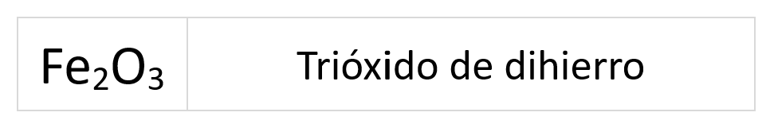
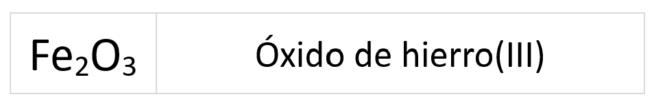
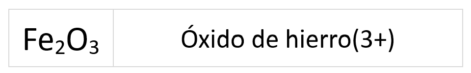
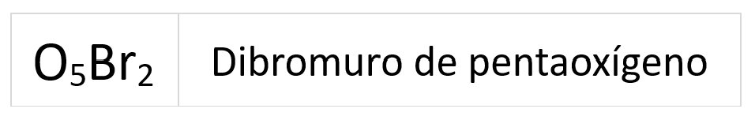
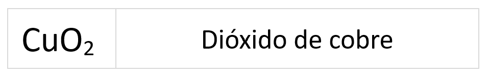
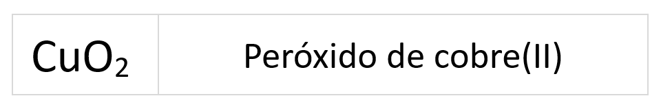
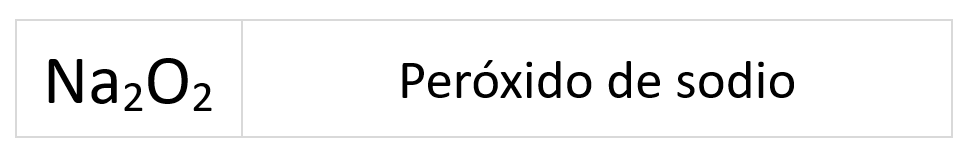
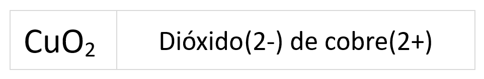
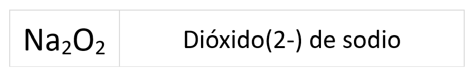

Estos compuestos se forman con la combinaciones del oxígeno con el resto de elementos de la tabla periódica a excepción de los elementos del grupo 18, los gases nobles.
Según con qué elementos se combine el oxígeno se diferencian tres tipos de compuestos:
Óxidos
Los óxidos son combinaciones del oxígeno con un metal o un no metal excepto con los elementos del grupo 17. En estos compuestos el oxígeno actúa con estado de oxidación -2 y el otro elemento con estado de oxidación positivo.
Para formular:
- Se coloca a la izquierda el elemento (número de oxidación positivo) y después el oxígeno (número de oxidación negativo).
- Se intercambian los estados de oxidación, prescindiendo del signo.
- Si se puede, se simplifican los subíndices en la fórmula obtenida.
Para nombrar:
Para nombrar estos compuestos dentro del idioma de la Química se utiliza la nomenclatura de composición y dentro de ella podemos nombrar los óxidos de tres formas distintas:
- Prefijos multiplicadores
-
En esta nomenclatura se utilizan los prefijos multiplicadores para indicar el número de átomos del mismo elemento en la molécula.
Se nombran según el siguiente esquema:
- El prefijo mono- solo se utiliza en caso de duda.
- Si el estado de oxidación se sobreentiende, no es necesario especificarlo con el prefijo multiplicador.
Ejemplo:

- Números de oxidación
-
En esta nomenclatura el número de oxidación del elemento se indica con números romanos entre paréntesis.
Se nombran siguiendo este esquema:
- No se deja espacio entre el nombre del elemento y el paréntesis.
- Si el estado de oxidación se sobreentiende, no es necesario especificarlo entre paréntesis.
Ejemplo:

- Valor de la carga (no lo vamos a ver en este curso)
-
Esta nomenclatura tan solo se puede utilizar para los compuestos iónicos, de ahí que solo sea válida para los óxidos metálicos (combinaciones del oxígeno con los metales).
El número de oxidación se indica con el valor de la carga entre paréntesis.
Se nombran según el siguiente esquema:

- No se deja espacio entre el nombre del metal y el paréntesis.
- Si el estado de oxidación del metal se sobreentiende, no es necesario especificarlo con el número de carga.
Ejemplo:

Haluros de oxígeno
Los haluros de oxígeno son combinaciones del oxígeno con los elementos del grupo 17 (los halógenos). El oxígeno actúa con estado de oxidación -2 y el otro elemento con estado de oxidación positivo.
Para formular.
- Se coloca a la izquierda el oxígeno aunque tenga número de oxidación negativo, y después se coloca a la derecha el halógeno.
- Este caso es una de la excepciones de la norma de colocar a la derecha el elemento con estado de oxidación negativo.
- Se intercambian los estados de oxidación, prescindiendo del signo.
Para nombrar.
Para nombrar estos compuestos en el idioma de la IUPAC se emplea la nomenclatura de composición o estequiométrica que en este caso solo se utiliza los prefijos multiplicadores.
Se utilizan los prefijos multiplicadores para indicar el número de átomos del mismo elemento en la molécula.
Se nombran según el siguiente esquema:
El prefijo mono, normalmente se suprime.
Ejemplo:

Recordamos que las fórmulas se leen de derecha a izquierda.
Peróxidos
Los peróxidos son combinaciones binarias de un metal (generalmente alcalino o alcalinotérreo) con el grupo O22-, grupo peroxo o dióxido(2-)
Para formular:
Se coloca a la izquierda el símbolo del metal y a la derecha el grupo peroxo. En grupo peroxo O22- el oxígeno actúa con -1.
Se formula igual que en los óxidos intercambiándose los estados de oxidación. De manera que la fórmula sea neutra cumpliendo la regla de la suma cero: “La suma algebraica de los estados de oxidación siempre debe dar cero”.
¡Ojo! No se puede simplificar el subíndice 2 que queda en el oxígenos, ya que forma parte del ión peróxido.
Para nombrar
Dentro de la nomenclatura de composición podemos nombrar los peróxidos de tres formas diferentes:
- Prefijos multiplicadores
-
En esta nomenclatura se utilizan los prefijos multiplicadores para indicar el número de átomos del mismo elemento en la molécula.
Se sigue el siguiente esquema:
Ejemplo :

- Número de oxidación
-
En esta nomenclatura el número de oxidación del metal se indica con números romanos entre paréntesis.
Para nombrar utilizando el número de oxidación se sigue el esquema:
Ejemplo:

Si el metal tiene un estado de oxidación que se sobreentiende, no es necesario especificarlo con números romanos entre paréntesis.
Ejemplo :

- Valor de la carga
-
Esta nomenclatura solo puede ser usada en compuestos iónicos, en este caso aquellos formados con el grupo peroxo y un metal.
En esta nomenclatura el estado de oxidación se indica con el valor de la carga entre paréntesis.
Se nombran según el siguiente esquema:
Ejemplo:

Si el metal tiene un estado de oxidación que se sobreentiende, no es necesario especificar el valor de la carga entre paréntesis.
Ejemplo:

Un caso especial es el H2O2 para este compuesto la IUPAC acepta el nombre de agua oxigenada.